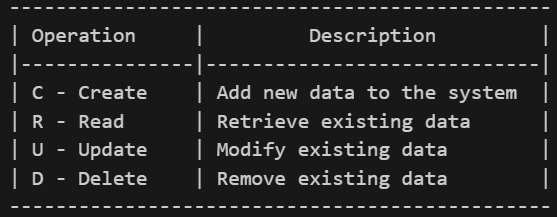

This is an Home Page for the Simple REST Api That Fetches User, Create users, Delete User, and Update it.
Here You can perfrom basic CURD Operations using POSTMAN when you install this on your local desktop
CURD Operations inculdes
To test this Api after installing locally you can perform this opertions
- To Get All the users from the mock-data file you can copy and paste this url
http://localhost:3004/api/users
- To Get the user with specific user id from the mock-data file you can copy and paste this url
http://localhost:3004/api/users/1
Note :http://localhost:3004/api/users/:id here :id is working as variable we can dynamically changed it get user with desired id
- For the Post, Patch and Delte You can use POSTMAN to send data to the server
- It can Update data using Patch option from POSTMAN
- It can Delete data using Delete option from POSTMAN
- It can Create data using Post option from POSTMAN on this URL : http://localhost:3004/api/users